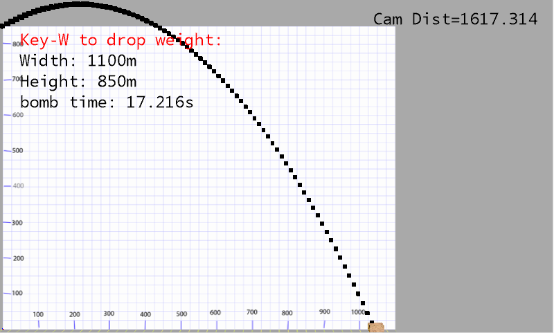
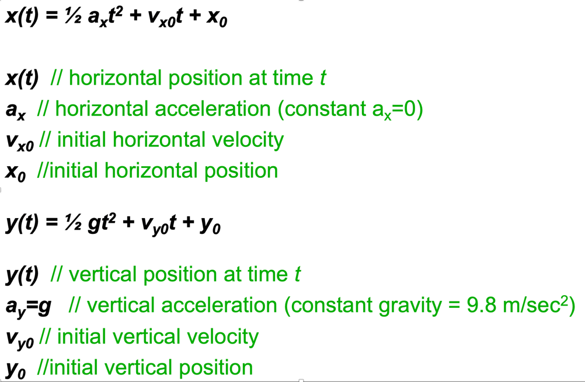
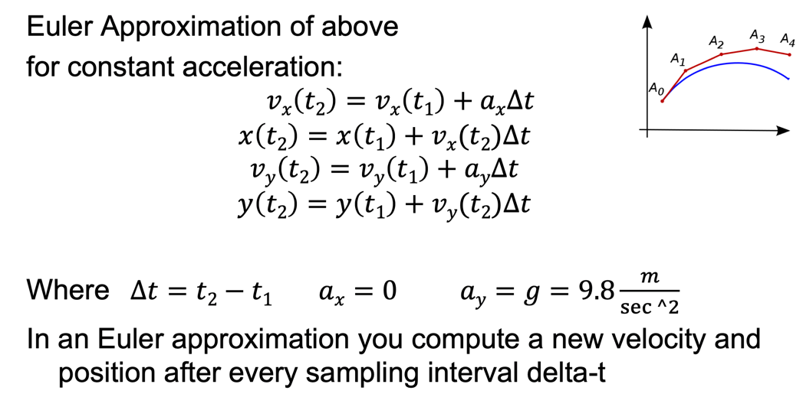

This assignment is to give practice using Swift by building a simulation of motion as it might be modelled in a game or physics math demonstration. This will be a simple console application and not yet an iOS app. The console app is based on tutorial 16 building a command line app in Xcode. What you build in this assignment will from the basic of an app that we will build in iOS. Here we are just building the object-oriented model objects and testing them with a console app.
Motion is oftem represented in one of two ways:
1) Using equations of motion that describe an objects position, velocity, and acceleration at any given instant (value of time).
2) Alternatively by assigning a postion, velocity, and acceleration to an object and then simulating what these values are a short time (delta t) later. This is referred to as an Euler approximation.
Although these area often thought of as interchangable they don't produce the exact same results. Here we want to investigate whether there is a perceivable difference in the two approaches.
In this assignment you will use some basic equations of motion (high-school physics math) to perform a calculated trajectory of a projectile and then compare that with how its motion might be simulated in a typical computer game.
This assignment is based on 9 specific design requirements numbered R1.1... R1.9. Two marks each for a total of 18 marks.
Marking is based on requirements as follows:
| Req Type | Marking |
|---|---|
| R0.x | Assignment gets 0 if any critical submission (red) |
| R0.x | You lose 2 marks for each good practice (orange) |
| Rx.x | You earn 2 marks for each desig n requirement (green) satisfied and well implemented; 1 mark if it's partly met or met but not well implemented; and 0 if it's not met. |
The following submission and good practice requirements will pertain to all your assignments regardless of what your application is supposed to do. These requirements are to ensure that your code is readable, robust and follows good software engineering practrices.
R0.0) IMPORTANT Uniqueness Requirement. The solution and code you submit MUST be unique. That is, it cannot be a copy of, or be too similar to, someone else's code, or other code found elsewhere. A mark of 0 will be assigned to any assignment that is judged by the instructors or the TA's not to be unique. (You are free, however, to use any code posted on our course web site in your assignments including tutorial demo code or answer code.)
R0.1) CODE ORGANIZATION, SUBMISSION AND COMPILATION: Your code should be submitted to culearn as an Xcode playground project. It should be based on Xcode 10.1 or later and Swift version 4.2 or later. You should include a ReadMe.txt file on how to run your app (though you will also demonstrate it in class.)
The following good practice requirements will be in effect for all assignments.
R0.2) Variable and Function names: All of your variables, methods and classes, XML tags etc, should have meaningful names that reflect their purpose. Don't follow the convention common in math courses where they say: "let x be the number of customers and let y be the number of products...". Instead call your variables numberOfCustomers or numberOfProducts. Your program should not have any variables called "x" unless there is a good reason for them to be called "x". (It's OK to call simple for-loop counters i,j and k etc. when the context is clear and very localized.)
R0.3) Encapsulation: All variables in your classes should be private unless a specific design requirements asks for them to be public (which is unlikely). It is good programming practice to design objects that provide services through public methods. How they store their data is their own private business. Note having public static constants or enums defined is of course ok and, in fact, encouraged.
R0.4) Robustness: Your program not crash when is is being run for marking. Make sure you have no null pointer exceptions (Java), or optional violations (Swift) or attempt to access an array or data structure out of bounds. (We get especially annoyed by out of bounds errors since they still seem to be the number one bug in programming and have been for a long long time!)
R0.5) Code Comment: Comments in your code must coincide with what the code actually does. It is a very common bug in industry for people to modify code and forget to modify the comments and so you end up with comments that say one thing and code that actually does another. By the way, try not to over-comment your code; instead choose good variable, constant, tag names, and method names that make the code more "self commenting".
R0.6) Hard Coded Constants: Your code should not have hard coded constants used in places like if-statements or function parameters. Your constants should have meaningful names. Don't have if statements like if(ball.getLocationX() + 40 < 100) ...; instead your code should look more like if(ball.getLocationX() + ballRadius < rightBoundaryX) ...; If necessary create local variables that reflect the use of the constant. e.g. double rightBoundaryX = 100; then you can refer to that in your program logic. (There is no prize for having fewer lines of code -if more lines makes your code more readable then use more lines).
R0.7) Nested Expressions: Don't use nested expressions that return results but obscure what the result or computation means. For example don't use expressions like:
totalView.setText(Double.parseDouble(view2.getText()) * (1 + Double.parseDouble(view3.getText())));
Instead do:
double price = Double.parseDouble(priceView.getText();
double tipPercentage = Double.parseDouble(tipPercentageView.getText();
//1...100
double totalPrice = price * (1+tipPercentage/100);
totalView.setText(totalPrice);
That is, don't be reluctant to use temporary variables whose names effectively comment the code. (Again, there is no prize for having fewer lines of code -if more lines makes your code more readable then use more lines).
VERY IMPORTANT: Any demo code or sample code fragments provided may have bugs (although none are put there intentionally). It is part of your job to identify errors in the code and in the requirements. Please report them so they can be fixed and discussed in class.
In this assignment we want you to implement a simulation to demonstrate what differences, or errors, are perceived when representing motion in two different ways. Motion is often represented with equations of motion or by doing a simulation called an Euler approximation. This exercise is based on the "Equations of Motion" powerpoint presentation included with this assignment.
We want you to write a command line program to show us the error (or difference) in the calculations vs. the simulation. That is your program might output two columns of numbers (e.g. the position of a projectile) based on the two ways of performing the calculation. You would also include a third columm that would be the difference in the two.
Your program should provide the answers for problems like the following: An athelete throws a javelin at 30 degrees upwards with a speed of 70 meters/second from the top of a 850 meter cliff. (see the example in the powerpoint)
Graphics and game books often talk about the error that is introduced when an Euler approximation is used instead of an actual equation of motion. We want you to show if a perceiveable error occurs.
Here is an image, from the notes, of what a simulation flight path might look like from an actual computer simulation or "game".

Here are a couple of demonstration videos showing the scenario. In the first video the projectile is shot horizontally and in the second one it is shot upwards at an angle of 30 degrees:
Here are the requirements of the console application:
R1.1) The user should be prompted to provide the following information:
R1.2) The user should be provided with proper prompts so they know what to enter.
R1.3) When all the information has been provided the program should calculate the position of the projectile using the theoretical equations of motion and also an Euler approximation. It should calcuate the position of the projectile using the number of time intervals specified by the user.
R1.4) The theoretical position should be calculated based on the two equations of motion as described in the powerpoint presentation:

These describe the position of an object at time t given knowledge of its initial position, initial velocity, and the acceleration (which is assumed to be a constant) during its travel.
R1.5) The Euler approximation is based on recalculating the position and velocity of the projectile every delta-T seconds using an Euler approximation (again see the powerpoint for details):

R1.6) The output of the program should show a table of the horizontal and vertical position of the projectile at each time interval. It should show the values calculated using the two methods side by side so we can easily see if the numbers agree or whether they are starting to deviate. Your output should be tabular and easy to read (columns should line up and be clearly labelled).
R1.7) The projectile should be modelled using its own Swift class or struct. It should have properties to maintain its position and velocity for the Euler simulation. It should have an advance(deltaT) method that would advance it by deltaT seconds when called. It should also have appropriate get methods to provide the program with needed values.
R1.8) The simulation should stop when the projectile hits the ground. That is, when its vertical position is 0 (ground level).
R1.9) At the end of the simulation the user should be prompted to enter another similar problem or be allowed to quit the program by entering "quit" for any of the requested data.
Here is a screen capture video showing how the program might behave: